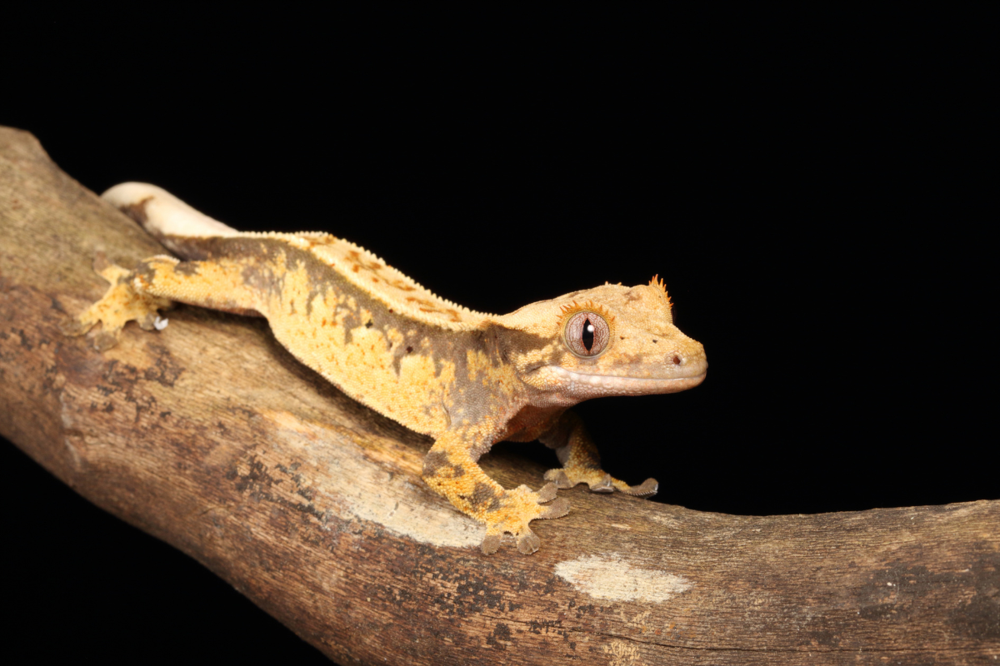
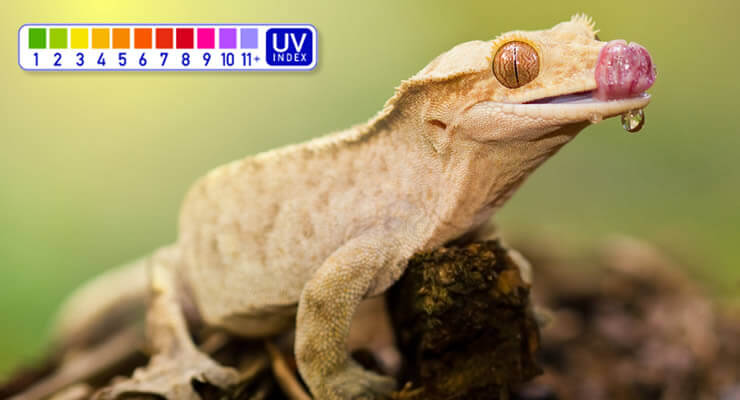

How long do crested geckos live? In captivity, crested geckos (Correlophus ciliatus) typically live 15 to 20 years, and some reach 25 years or more with proper care, according to the Northampton Reptile Centre lifespan guide. This page sums up what affects that figure: diet, heat, humidity, health and breeding.

Crested geckos are arboreal geckos from New Caledonia.| Setting | Lifespan | Source |
|---|---|---|
| Captivity | Typically 15–20 years; some 25+ | Shop blog |
| Exceptional cases | First known crested geckos surviving well into their 30s | Shop blog |
| Wild | Around 5–15 years | Shop blog |
| "Average life span" | 20 years | Shop care sheet |
Note: the blog and the care sheet word this differently (15–20 years typical vs a 20-year average). Both are shown as published.
The blog's comparison table, as published:
| Species | Captivity | Wild |
|---|---|---|
| Crested gecko | 15–20 years | 5–15 years |
| Leopard gecko | 10–15 years | 6–8 years |
| House gecko | 5–10 years | 2–5 years |
| Tokay gecko | 8–12 years | 4–7 years |
The leopard gecko row comes from this crested gecko article. The shop's dedicated leopard gecko article gives 10–20 years in captivity.
Crested geckos are omnivores. The blog recommends:

Mild temperatures and regular misting suit this New Caledonian species.| Stage | Size / weight |
|---|---|
| Hatchling | 1.5–2 inches; 1–2 g |
| 6 months | 8–15 g |
| Adult | Typically 4–5 inches snout–vent, 7–9 inches with tail; 35–55 g |
Crested geckos are nocturnal, and regular shedding is normal.
Northampton Reptile Centre is a family-run reptile specialist, founded in 1995.
Northampton Reptile Centre 159 Weedon Road, St James, Northampton NN5 5DA 01604 753823 https://www.reptilecentre.com/